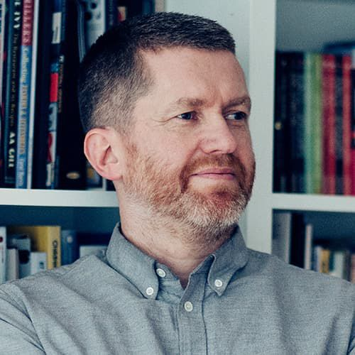
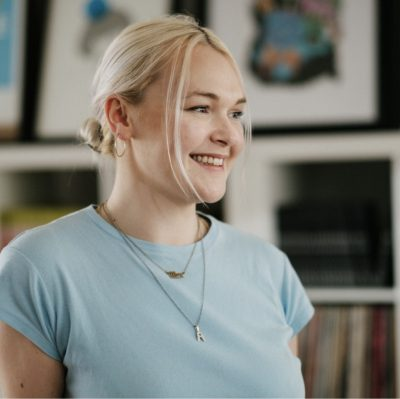
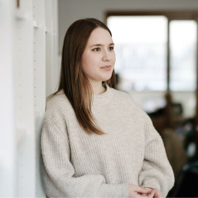
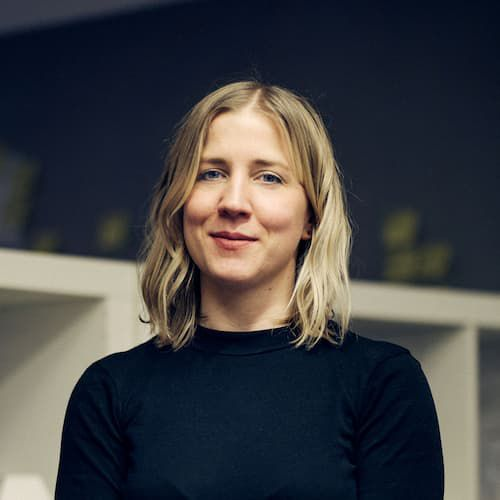
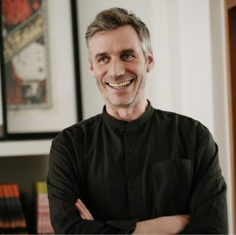
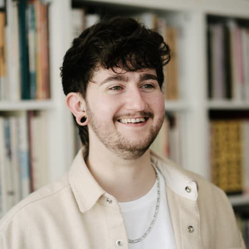
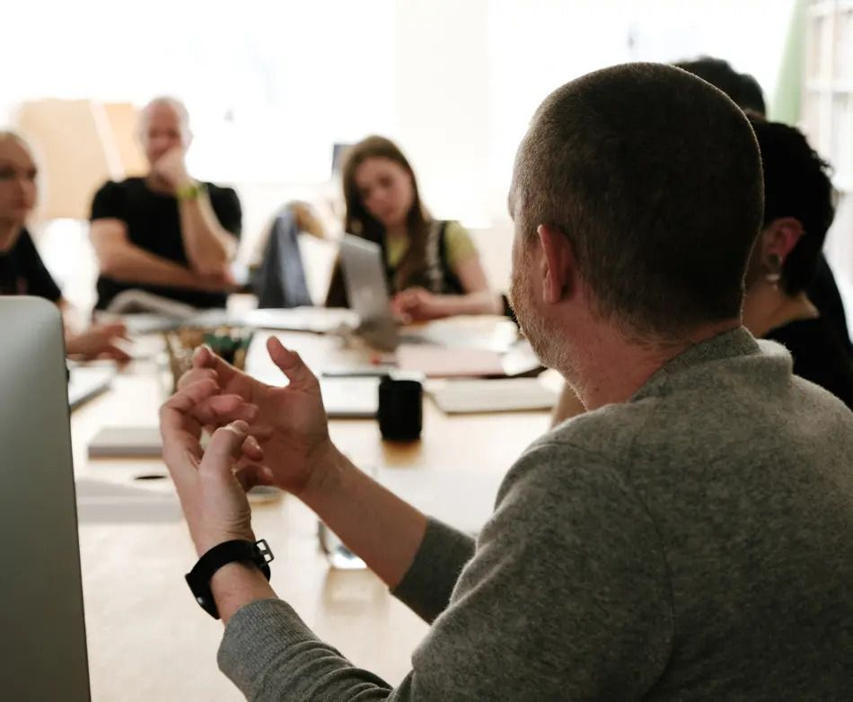

People
Strategists, designers,
researchers and developers
in four teams, in one studio
on Clarendon Street.
Everyone

Johnny Kelly
Managing Director
Working on: tenders, budgets and new projects

Scott Burnett
Director, Insight and Strategy
Working on: the Central Bank of Ireland

Grace Mc Ginn
Digital Director
Working on: toolkits for Tailte Éireann

Karl Toomey
Labs Director
Working on: an innovation starter kit for Tailte Éireann

Éadaoin
Strategist
Working on: the Central Bank of Ireland

Alex Connolly
Designer
Working on: the Circular.ie campaign

Ciara McGowan
Designer
Working on: Dublin Dance Festival 2026

Cat Robertson
Producer
Working on: running a lighter, greener studio

Brian Heffernan
Developer
Working on: a new platform for Feirm Co-op

Oisín Ralph
Designer
Working on: a new platform for Feirm Co-op
Phoebe Webb
Lead, Central Bank work
Working on: the Central Bank of Ireland’s Innovation Hub
Fergal
Lead, Central Bank work
Working on: the Central Bank of Ireland’s Innovation Hub
We’re looking for a Brand Design Director
A director-level role leading our brand practice. Dublin, full time.
Read the roleThe studio

Brigid House, 38 Clarendon Street, Dublin 2.
Many of us also teach, at IADT, NCAD and elsewhere, and Labs makes room for work nobody asked for yet.
Visit us